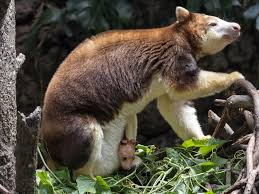
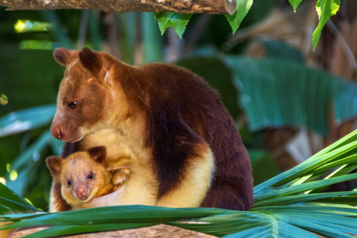
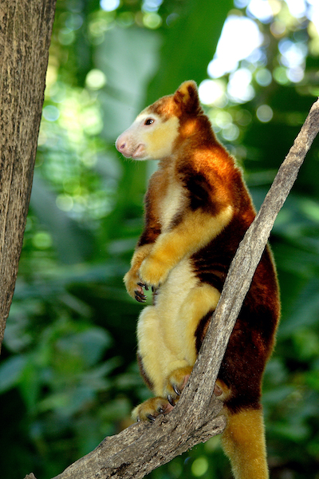
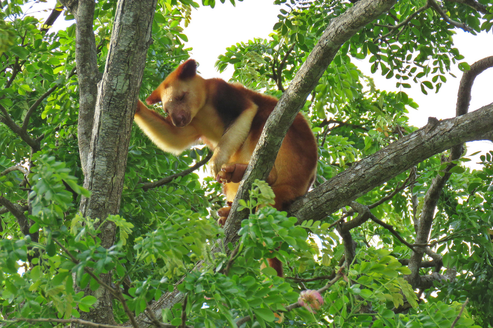
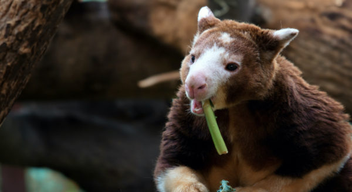
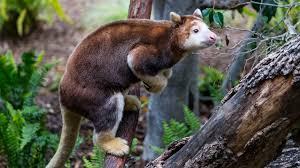

The tree kangaroo is a very rare type of marsupial that belongs to the genus known as Dendrolagus. Although this animal belongs to the group called macropods, which includes kangaroos and wallabies, it has developed special adaptations that enable it to be an agile climber.
Wikipedia
Tree kangaroos hail from Huon Peninsula in Papua New Guinea, where they face danger due to various human actions like habitat loss and poaching, said the statement. Tree kangaroos are predominantly arboreal and smaller compared to the more famous red kangaroo found in Australia. A full-grown tree kangaroo has a body weight of about 20 to 25 pounds (9-11 kilograms). The young kangaroos or joeys have lengths up to 30 inches (76 centimeters) when fully grown. KLCC





Hunting and human habitation pose a danger to almost all tree kangaroos, and the same applies to Papua New Guinea. Some of the tree kangaroos which face critical danger include Tenkile, Weimang, and Matschie's tree kangaroo. Hunting, palm oil production, and logging are some of the reasons for their low numbers.